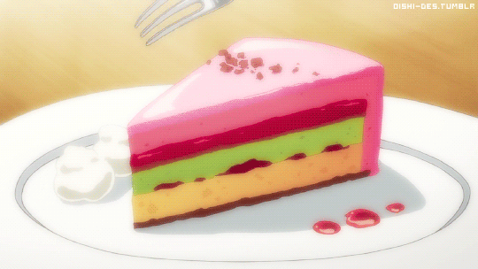

Rainbow Cake

Description :
A cake that resembles a rainbow, and is topped with strawberry fluff that reminds you of cotton candy.
Ingredients :
- 4 eggs, room temperature
- 1 cup white sugar
- 2 cups all-purpose flour
- 2 teaspoons baking powder
- ¼ teaspoon salt
- 1 cup hot milk
- 2 tablespoons butter
- 1 teaspoon vanilla extract
- 3 drops red food coloring
- 3 drops green food coloring
- 3 drops yellow food coloring
- ½ cup apple jelly
- 5 ounces sliced frozen strawberries
Steps :
- Preheat oven to 350 degrees F (175 degrees C). Grease and flour three 9 inch square pans.
- Beat eggs in mixing bowl until frothy. Gradually beat in 1 cup sugar. Beat until light colored and thick.
- Into hot milk, stir vanilla and butter until melted. Fold milk mixture into batter. Divide batter in 3 equal parts into
separate bowls.
- Add a few drops of red food colouring onto one batter. Stir to mix. Spread into a prepared pan. Add a few drops of yellow food colouring into another batter. Stir to mix.
Spread into a prepared pan. Add a few drops of green food coloring into remaining batter.
- Bake in oven for about 10 to 15 minutes until an inserted wooden pick comes out clean. Let stand 8 to 10 minutes. Turn out onto racks to cool.